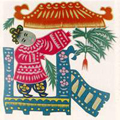

端午节是中国人最熟悉的节日之一，却也是中国人最陌生的传统节日之一。说熟悉，因为在中国，几乎没人不知道五月初五端阳节。说陌生，因为在现在，已经很少有人知道端午节究竟应该怎样过。端午节，这个渐渐被我们淡忘的日子究竟有着怎样的故事，过去的人们究竟如何度过这特殊的一天？端午佳节又至，在品粽怀古之余，不妨也体味一下粽香背后端午节更本真的味道，或可在那粽香深处寻到一些不该被忘却的文化记忆。
端午节简介
“棕子香，香厨房。艾叶香，香满堂。桃枝插在大门上，出门一望麦儿黄。这儿端阳，那儿端阳，处处都端阳。”这首童谣所唱的便是我国的传统节日端午节。
农历五月初五，是中国民间的传统节日——端午节，它是中华民族古老的传统节日之一。端午也称端五，端阳。此外，端午节还有许多别称，如：午日节、五月节、浴兰节、女儿节，天中节、诗人节、龙日等等。
端午节为什么要叫端午节？它还有哪些其他的名字？端午节究竟从何而来？最初的端午节究竟是什么样子？端午节和我们崇尚的龙文化有着怎样的渊源？看似熟悉的端午节，它的身上却有着太多的秘密不为我们所知。
每一个节日的背后，都有着许多美丽的传说。中国传统节日就是有这样的特点。作为中国人重要节日之一的端午节自然也不例外。屈原，伍子胥，曹娥，黄巢，一连串耳熟能详的名字和故事共同引领着我们的端午记忆。
端午节纪念屈原，因此，它也成了人们心中的诗人节。在这样一个充满诗意的日子里，诗人们不禁都要提起手中的笔，挥毫泼墨，尽情的吟咏抒怀。诗文共欣赏，我们也随着这些流传千百年的诗句一起，走进作为诗人节的端午。

端午节的习俗，不仅是吃粽子这么简单。我国各地，在端午节这一天都有着丰富多彩的节庆活动。不仅有飘香的粽叶，金色的龙舟，绿色的艾草，五彩的丝线，鲜艳的倒灾葫芦……纷繁的色彩描绘着同样的端午主题——健康，怀念，龙。